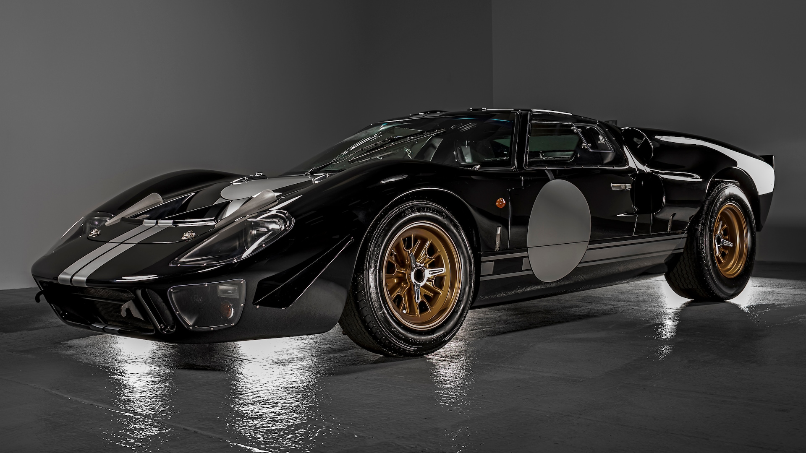

Classic Ford.
Driven by history.
Designed to be remembered.
From the first Model T to racing icons and timeless road cars, discover the machines that shaped generations of motoring.
A LEGACY IN MOTIONMade to move
Made to move
the world.
More than a century of ideas, engineering and unforgettable design.

1903THE BEGINNING
120+YEARS OF HISTORY
LEGENDSBUILT TO LAST
ENGINEERING & CRAFTIdeas that changed
Ideas that changed
the road ahead.
Explore the design thinking, manufacturing breakthroughs and motorsport ambition behind the badge.

01 / ENGINEERINGInnovation with purpose.
From accessible mass production to performance engineering, progress has always been part of the story.